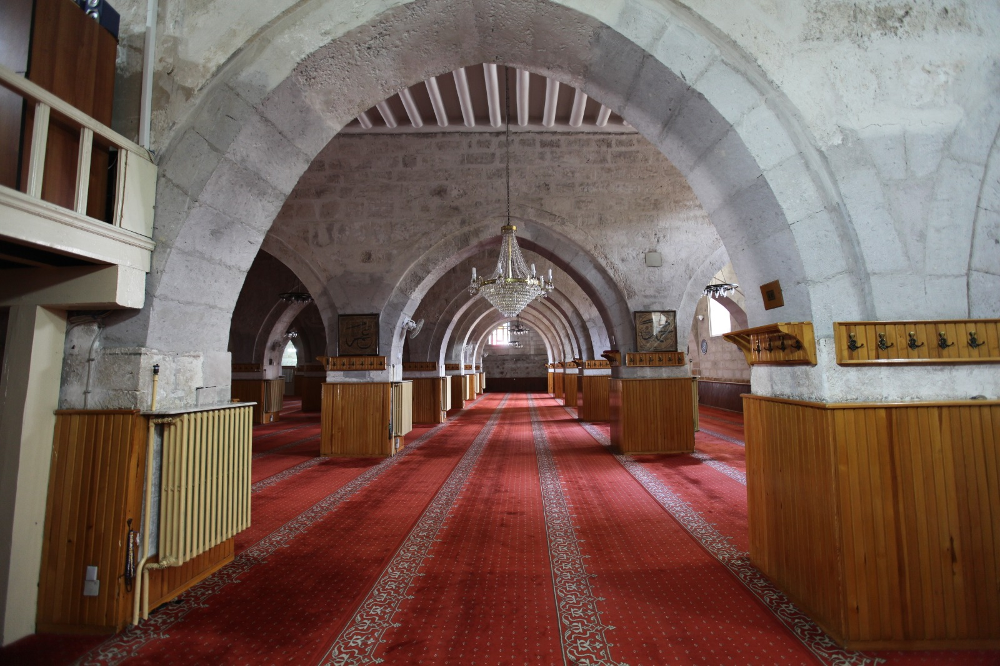

TARİHi VE GEZİLECEK YERLER
Taşhan
Kent meydanına 200 metre mesafede yer alan Taşhan, 19. yüzyılın ikinci yarısından kalma tarihi yapılardan biri. İki katlı hanın üç girişi bulunmakla birlikte avlunun ortasında elips şeklinde bir su havuzu bulunmaktadır.
Günümüzde avlusu kafeterya masalarıyla kaplı hanın diğer katları ise iş merkezi olarak kullanılmaktadır.
Hanın yerinde daha öncesinde eski bir han veya başka bir yapının olduğu tahmin edilmektedir ve ticaretle uğraşan azınlıklar tarafından gayrimüslim bir mimara yaptırıldığı düşünülmektedir.
Hanın inşasında çoğunlukla kesme taş kullanılmıştır ve 19. yüzyılın taş işçiliğine dair çok önemli detaylara sahiptir.
Neden gitmeliyim? Günümüzde mimari detayları her ne kadar öne çıkarılamamış olsa da dikkatli gözlerin birçok mimari ve tarihi detay yakalayacağını düşünüyoruz.
Bu nedenle Sivas gezisi sırasında soluklanmak ve bir bardak çay, kahve içmek isterseniz Taşhan’a mutlaka uğramalısınız.
Behrampaşa Hanı

Türkiye’nin en önemli tarihi eserlerinden biri olarak gösterilen Behrampaşa Hanı, 1576 yılında III. Murat döneminde Sivas eyaleti beylerbeyi unvanındaki Behram Paşa tarafından yaptırılmıştır.
Yapıldığı dönemde şehrin ticaret nabzını tutan hana İran, İran ve Avrupa kentlerinden gelen kürk kervanlarına ev sahipliği yapmaktaydı. Han, Selçuklu han mimarisi özelliklerini taşımaktadır.
Günümüzde ise otel, restoran/kafe konseptinde hizmet vermektedir.
Han, 2016 senesinde restorasyona alınmış olup, 2018 senesinden bu yana bu amaçla hizmet vermektedir.
Otelde 48 adet oda bulunmaktadır.
Behrampaşa Hanı’nda tarihin gölgesinde bir akşam yemeği yemenizi tavsiye ederiz.
Sivas Ulu Cami
Anadolu’nun en eski camilerinden biridir. Anadolu’daki mimarlık tarihinde, cami iç mekân fikrinin gelişmesinde önemli bir yapıdır.
Avlusuna üç yönden girişi ve düz damlı, dikdörtgen planlı, kufe tipli cami sınıfına giren ender örneklerdendir.
Kubbe fikrinin henüz gelişmediği bir dönemde yapılmıştır. Bazı bilim adamlarına göre Danişmendi dönemi eseri olarak da kabul edilmektedir.
Danışmendliler 1085–1178 yıları arasında Sivas, Kayseri ve Malatya’ya yerleşmişlerdir.
Tokat, Niksar Ulu Camii (1145), Kayseri Ulu Camii (XII. yüzyıl ortaları), Tokat Yağıbasan (Çukur) Medrese (1151-52), Niksar Melik Nizamettin Yağıbasan (1157-58), Niksar Kulak Tekkesi ile Türbesi; Kayseri-Pınarbaşı –Türbe Köyü Melik Danişmend Kümbeti, Danişmentli eserlerinden bazılarıdır.
Danişmentliler 1178’de Selçuklulara bağlanmasına rağmen adlarına yapılan yapılar yüzyılın sonuna kadar uzanmaktadır.
Sivas Ulu Camii’ni de Danişmentli Dönemi'nin önemli eserlerinden saymak mümkündür. Asıl ibadet alanına, kuzey duvarının tam ortasında asıl ve köşelere yakın yerlerden birer olmak üzere üç ayrı kapı ile girilmektedir.
İbadet alanının kuzey-güney doğrultusundaki Kıbleye (güney duvarı) dikey uzanan on bir sahnı oluşturan kesme taş örgülü yığma 50 adet kırma ayak birbirine sivri kemerlerle bağlanmıştır. Mihrap eksenine uzanan orta sahın diğerlerinden biraz daha geniş tutulmuştur.
Ulu Cami, 54.70 x 33.70 metre iç ölçülerindedir. Yapının asıl giriş kapısı ile diğer kapıları süslemesizdir. 1955 yılı onarımında ortaya çıkarılan özgün mihrabın üzerinde, birbirini kesen sekizgenlerden geometrik örgü motifli iç içe iki sekizgenin kenarlarından çıkan kollarla kesilmesi ile kareler oluşturan süslemeler bulunmaktadır. Onarımda mihrabın süslemeleri taş malzemeyle sade bir şekilde düzenlenmiştir. Üstünde yukarıya doğru gittikçe daralan yedi sıra mukarnaslı kavsaradan başka süsleme elamanı görülmez. Ulu Camii’nin Osmanlı Devrine ait 23 mezardan oluşan bir haziresi bulunmaktadır. 1955 onarımında çıkan kitabesine göre 1196-97 yıllarında Kutbettin Melikşah döneminde Kızılarslan bin İbrahim tarafından Kul Ahi’ye yaptırıldığı anlaşılmaktadır.
Gökpınar Gölü

Gökpınar Gölü tabii güzelliği bakımından Gürün’ün olduğu kadar ülkemizin de nadide yerlerinden biridir. İlçe merkezine 10 kilometre uzaklıktadır.
Suyu tatlı, berrak ve temizdir. Öyle ki bazı kısımların derinliği 17-20 metreyi bulduğu halde içine atılan küçük bir cismin tabana kadar çöküşü ve tabandaki duruşu, net olarak izlenebilmektedir. Gölün diğer bir özelliği, güneşin açısına göre ton değiştirmesidir.
Gölün rengi mavi-gök renginden olduğu için bu ad verilmiştir.
Yaslandığı kayaların dibinden ve yer yer tabandan kaynayan göl, iki parçadan oluşmaktadır. Küçük Göl adı verilen gölden çıkan suda alabalık üretimi yapılmaktadır.
Büyük Göl ise turistik amaçlarla ziyaret edilen bir konumdadır.
Halk arasında Gökpınar’ın oluşumu ile ilgili olarak iki efsane anlatılmaktadır. Birincisine göre, “Bir çoban sürüsüyle birlikte gölün bulunduğu arazide dinlenirken rüyasında kendisine ‘Koyunların ile birlikte buradan uzaklaş, alttan su kaynayacak’ denir.
Çoban uyandığı zaman aceleyle sürüyü alır ve karşı yamaca geçer. Gerçekten de bir süre sonra su kaynamaya başlar ve Gökpınar oluşur.
İkincisine göre ise, “Çoban ve sürüsü şiddetli susuzluk çekmektedir. Oraya yakın bir çevrede su kaynağı yoktur.
Çoban çaresiz bir şekilde ‘Ya Rabbi su’ diye inler ve elindeki asasını yere vurur. Bir süre sonra asanın değdiği yerden su kaynamaya başlar. Çoban ve koyunlar kana kana sularını içerler. Çıkan bu su, orada bir göl halini alır." Gölün suyu berrak ve gök mavisi olduğu için yöre halkı göle “Gökpınar” ismini verir
Rafting sporu ile ilgilenen insanlar için görülmeye değer bir yerdir. Gökpınar Gölü'nün alanı 3 bin metrekaredir. Doğal bir akvaryum görünümündedir. Suyu çok tatlı ve soğuktur.
Aşık Veysel Müzesi
Sivrialan Köyü'nde bulunan Halk Ozanı Âşık Veysel Şatıroğlu'nun evi Kültür Bakanlığı tarafından 1979 yılında kamulaştırılmış ve 1982 yılında müze olarak ziyarete açılmıştır. Müzede Âşık Veysel'in kişisel eşyaları, fotoğrafları, şiirleri ve onunla ilgili yayınlanan eserler sergilenmektedir. Âşık Veysel'in anısını yaşatmak için her yıl 9-11 Temmuz tarihleri arasında Sivas'ta ve Şarkışla-Sivrialan Köyü'nde anma törenlerinin yanı sıra “Âşık Veysel Âşıklar Bayramı” adı altında festival düzenlenmektedir.
Eğri Köprü

Eski dönemlerde Bağdat (İpek) Yolu'nun üzerindeki Eğri Köprü, yakın zamana kadar Sivas-Malatya yolu ve Güneydoğu Anadolu'nun ulaşımını sağlamıştır. Selçuklu yapısı olan köprü 173 metre uzunluğundadır. Biri 12, öteki 6 olmak üzere iki bölümden oluşmaktadır. Köprü batı yönünde düz bir şekilde devam ederken orta kısımlarda kuzeye doğru eğik olarak kesme taştan inşa edilmiştir.